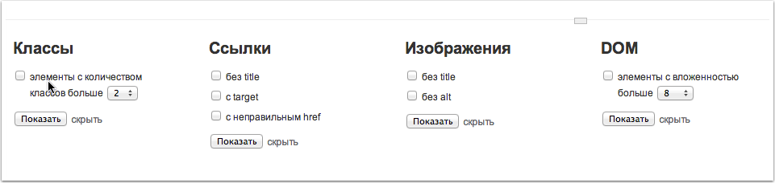

Плагин — Дебаг-режим
Установка плагина Дебаг-режим
Скачайте Дебаг-режим в папку плагинов в установленном Source.js и выполните следующие команды:
$ cd Debugmode
$ npm install
$ volo add
Если вы хотите разрабатывать Дебаг-режим, процесс разработки описан в документации.
Кратко о дебаг-режиме
Дебаг режим позволяет упростить тестирование верстки. Это плагин для Source, и он неразрывно связан с этим движком. Дебаг режим доступен на всех страницах спецификаций, включается кликом по контролу, находящемуся в левой части страницы на всей ее высоте.

Состоит из двух основных частей.
Тулбар в каждой секции

Тулбар, появляющийся в каждой секции при наведении на нее. Он позволяет проверить верстку на контентоустойчивость без инсепкторов и файрбагов. Для этого необходимо войти в режим редактирования контента, кроме того можно откатить контент каждой секции до начального состояния, и так же в этом тулбаре есть ссылка на выход из дебаг-режима.
Тулбар внизу страницы
Основной тулбар, появляющийся внизу страницы. Для удобства, его можно скрыть, не выходя из дебаг-режима, а так же менять его высоту, просто потянув его за контрол ресайза, посередине тулбара. В этом тулбаре находится несколько форм, которые помгают протестировать верстку с точки зрения проблем по отдельным элементам.
Для удобства основной тулбар разделен на несколько форм.

С помощью него в дебаг-режиме вы можете протестировать верстку, посмотрев проблемные элементы. Каждый элемент будет выделен красным цветом.

А при наведении на него в левом верхнем углу отобразится тултип с информацией, почему элемент считается проблемным.

Проблемные элементы можно выбирать с помощью форм внутри тулбара:
- Элементы с количеством классов больше выбранного. При наведении на элемент в тултипе ошибки будет указано число классов элемента.
- Ссылки с неправильными атрибутами.
- Изображения с неправильными атрибутами.
- Элементы с количеством вложенности DOM больше выбранного. При наведении на элемент с тултипе ошибки будет указано уровень вложенности элемента относительно секции или же, если страница не разбита на секции, относительно всего документа.
Будущее дебаг-режима
В ближайшее время планируется добавить к дебаг-режиму еще несколько функций, таких как:
- сетка поверх макета для более точной проверки отступов и расположения блоков.
- проверка на доступность.
- проверка на количество перебитых стилей у элементов.
- дополнительные проверки по чеклисту, например - правильные отрибуты полей формы.